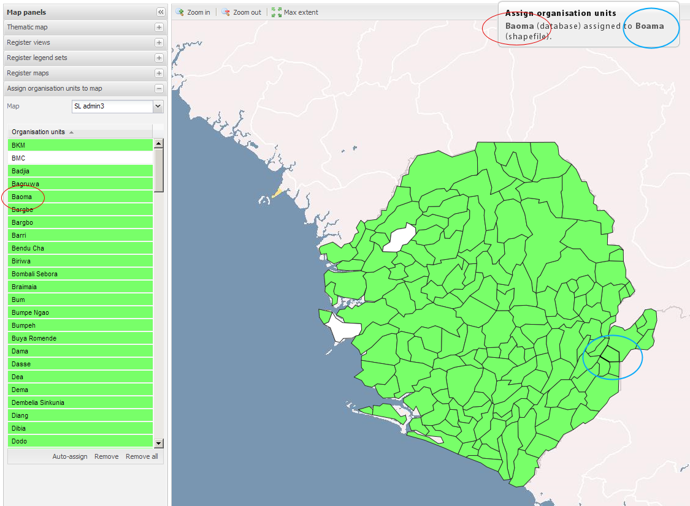

| Revision History | ||
|---|---|---|
| Revision 1 | 12/09/2009 | JPP |
|
Initial conversion of document to DocBook format | ||
The DHIS2 mapping client relies on GeoJSON files in order to display a map in the browser window. Often times, geographical data is received in many different formats, but the ESRI shape file format is one of the most common. Several procedures will be described below. It is important, but not required, that the names in your geographical data match those in the DHIS2 organizational hierarchy. If they do not, you will need to manually match them in a later step
Geoserver is capable of outputting GeoJSON formats. If you have geoserver running someplace, you can execute the following query.
http://localhost:8080/geoserver/wfs?request=GetFeature&typename=who:zm_adm1&outputformat=json
You will need to adjust the host destination if the machine is not
your local machine as well as defining the actual layer in Geoserver
which should be output to GeoJSON (in this case
who:zm_adm1).
Upon execution of the URL, Geoserver will produce a GeoJSON file, and you will be asked to save it. Once it has finished downloading, rename the file following the suggested naming convention:
ISO2CountryCode followed by an underscore, followed by the layer type (e.g. “admin” for administrative layers, “health” for health administrative boundaries). For instance, the first administrative layer for Zambia would be named as "zm_admin1".
GDAL is a multi-platform toolkit for the manipulation of geographical data. It is freely available for a wide-range of platforms at http://gdal.org
Production of GeoJSON files are straightforward with GDAL. Just execute (on Windows)
ogr2ogr.exe -f "GeoJSON" dst_datasource_name src_datasource_name
or on Linux
ogr2ogr -f "GeoJSON"dst_datasource_name src_datasource_name
Replace dst_datasource_name with the path
to the destination geographical data file (following the naming
convention described above) and
src_datasource_name with the source geographical
data file.
: you will find your own registered maps in the Map combo box in the Thematic map panel. The Admin panels check box will become visible.
the Map combo box will simply be populated by the existing organisation unit levels and GeoJSON files will be created by the application automatically Organisation units must have coordinates stored in the database in order to be displayed in the map. This function is mainly intended for the facility level as it is easy to maintain and thus will offer up-to-date shapefiles.
Show/hide the shapefile management panels.
In order to view data in the GIS module, you must import your geographical data into your DHIS installation. Once you have produced GeoJSON files according to the procedure above, and imported them into the system, you will need to establish a correspondence between the information in the DHIS database, and the GeoJSON file.
The level of the organization units displayed in the GeoJSON file.
The GeoJSON file name. These files must be placed in the mapping/geojson folder. Use e.g. Geoserver 2.0 (currently RC1) to easily produce GeoJSON from your shapefiles.
Represents your map in the Map combo box in the Thematic map panel.
The shapefile data column (case sensitive!) that will be matched against DHIS organisation unit names. If you have an instance of Geoserver installed, you can view the layer through the built-in OpenLayers client. Click on a particular area, and the possible fields will be displayed.
The longitude and latitude refer to the approximate point where the map will be centered after rendering. If you have Geoserver running, you can view the layer through the integrated OpenLayers client and determine a good center point for your map. You can also use the background map of the DHIS GIS module, and determine an approximate location. You may need to experiment a bit with the center point and zoom level in order to get it correct.
The zoom level controls the extent of the map. Some experimentation will be required to get the correct zoom level. Start with a value of "7" and increase or decrease the zoom level depending on the extent of the map that should be displayed.
Select a registered map and wait for it to load. The organisation units (OU) in your database on this level will appear in the list and colors will appear in the map. What we want to do here is creating relations between OUs in the database and the corresponding OUs in the shapefile. This is often necessary because of inconsistencies in the naming in the geographical data, and what is present in the DHIS database. First, try auto-assign at the bottom toolbar to let the application link the OUs with a matching OU name in the shapefile. The polygons that remain white, you will have to link manually by first selecting a white OU in the list and then click the corresponding OU in the map.
|  |
The remove button at the button tool bar removes the selected OU’s link. The remove all button removes all OU links for the selected map.
Overlays are geographical layers that do not have any direct linkage to data in the database. Example include roads, rivers, airports, ports, and other geographical information that you may want to display on your map, but that is not neccsarily linked ot data contained in the DHIS database. The panel will allow you to add new layers and determine how they will be represented visually on the map.
Display name: Represents your overlay in the layer tree in the upper right corner.
Map source file: The GeoJSON file name.
Fill color: Decides the fill color if the layer is a polygon layer.
Fill opacity: Select an opacity level between 0 (invisible) and 1 (solid).
Stroke color: The stroke color over lines and polygon borders.
Stroke width: Select a stroke width between 0 and 4.
This panel should be rather self-explanatory . Calculation method alludes to the legend interval size and set to they will be “highest map value – lowest map value / number of classes”. Choose and you may set your own legend limits, e.g. “20,40,60” using a comma to seperate each of the class break values.
This panel will save the current thematic map view in order to restore it whenever you want via the combo box in the panel. By adding your views to DHIS 2 Dashboard you may access them there by inserting into one of link areas.
A legend set may be connected to many indicators, but an indicator may only have one legend set. Thus, you may select many indicators when you create a legend set. When an indicator that has a legend set is selected in the panel, the number of classes, low color and high color is automatically set.